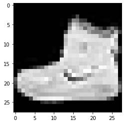
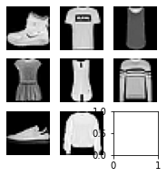
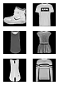
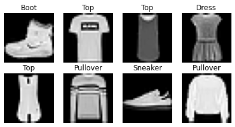

import logging,pickle,gzip,os,time,shutil,torch,matplotlib as mpl
from pathlib import Path
from torch import tensor,nn,optim
from torch.utils.data import DataLoader
import torch.nn.functional as F
from datasets import load_dataset,load_dataset_builder
import torchvision.transforms.functional as TF
from fastcore.test import test_close
torch.set_printoptions(precision=2, linewidth=140, sci_mode=False)
torch.manual_seed(1)
mpl.rcParams['image.cmap'] = 'gray'logging.disable(logging.WARNING)Hugging Face Datasets
name = "fashion_mnist"
ds_builder = load_dataset_builder(name)
print(ds_builder.info.description)Fashion-MNIST is a dataset of Zalando's article images—consisting of a training set of
60,000 examples and a test set of 10,000 examples. Each example is a 28x28 grayscale image,
associated with a label from 10 classes. We intend Fashion-MNIST to serve as a direct drop-in
replacement for the original MNIST dataset for benchmarking machine learning algorithms.
It shares the same image size and structure of training and testing splits.
ds_builder.info.features{'image': Image(decode=True, id=None),
'label': ClassLabel(num_classes=10, names=['T - shirt / top', 'Trouser', 'Pullover', 'Dress', 'Coat', 'Sandal', 'Shirt', 'Sneaker', 'Bag', 'Ankle boot'], id=None)}ds_builder.info.splits{'train': SplitInfo(name='train', num_bytes=31296607, num_examples=60000, dataset_name='fashion_mnist'),
'test': SplitInfo(name='test', num_bytes=5233810, num_examples=10000, dataset_name='fashion_mnist')}dsd = load_dataset(name)
dsdDatasetDict({
train: Dataset({
features: ['image', 'label'],
num_rows: 60000
})
test: Dataset({
features: ['image', 'label'],
num_rows: 10000
})
})train,test = dsd['train'],dsd['test']
train[0]{'image': <PIL.PngImagePlugin.PngImageFile image mode=L size=28x28>,
'label': 9}x,y = ds_builder.info.featuresx,y('image', 'label')x,y = 'image','label'
img = train[0][x]
imgxb = train[:5][x]
yb = train[:5][y]
yb[9, 0, 0, 3, 0]featy = train.features[y]
featyClassLabel(num_classes=10, names=['T - shirt / top', 'Trouser', 'Pullover', 'Dress', 'Coat', 'Sandal', 'Shirt', 'Sneaker', 'Bag', 'Ankle boot'], id=None)featy.int2str(yb)['Ankle boot',
'T - shirt / top',
'T - shirt / top',
'Dress',
'T - shirt / top']train['label'][:5][9, 0, 0, 3, 0]def collate_fn(b):
return {x:torch.stack([TF.to_tensor(o[x]) for o in b]),
y:tensor([o[y] for o in b])}dl = DataLoader(train, collate_fn=collate_fn, batch_size=16)
b = next(iter(dl))
b[x].shape,b[y](torch.Size([16, 1, 28, 28]),
tensor([9, 0, 0, 3, 0, 2, 7, 2, 5, 5, 0, 9, 5, 5, 7, 9]))def transforms(b):
b[x] = [TF.to_tensor(o) for o in b[x]]
return btds = train.with_transform(transforms)
dl = DataLoader(tds, batch_size=16)
b = next(iter(dl))
b[x].shape,b[y](torch.Size([16, 1, 28, 28]),
tensor([9, 0, 0, 3, 0, 2, 7, 2, 5, 5, 0, 9, 5, 5, 7, 9]))def _transformi(b): b[x] = [torch.flatten(TF.to_tensor(o)) for o in b[x]]inplace
def inplace(
f
):
Call self as a function.
transformi = inplace(_transformi)r = train.with_transform(transformi)[0]
r[x].shape,r[y](torch.Size([784]), 9)@inplace
def transformi(b): b[x] = [torch.flatten(TF.to_tensor(o)) for o in b[x]]tdsf = train.with_transform(transformi)
r = tdsf[0]
r[x].shape,r[y](torch.Size([784]), 9)d = dict(a=1,b=2,c=3)
ig = itemgetter('a','c')
ig(d)(1, 3)class D:
def __getitem__(self, k): return 1 if k=='a' else 2 if k=='b' else 3d = D()
ig(d)(1, 3)list(tdsf.features)['image', 'label']batch = dict(a=[1],b=[2]), dict(a=[3],b=[4])
default_collate(batch){'a': [tensor([1, 3])], 'b': [tensor([2, 4])]}collate_dict
def collate_dict(
ds
):
Call self as a function.
dlf = DataLoader(tdsf, batch_size=4, collate_fn=collate_dict(tdsf))
xb,yb = next(iter(dlf))
xb.shape,yb(torch.Size([4]), [9, 0, 0, 3, 0])Plotting images
b = next(iter(dl))
xb = b['image']
img = xb[0]
plt.imshow(img[0]);
show_image
def show_image(
im, ax:NoneType=None, figsize:NoneType=None, title:NoneType=None, noframe:bool=True, cmap:NoneType=None,
norm:NoneType=None, aspect:NoneType=None, interpolation:NoneType=None, alpha:NoneType=None, vmin:NoneType=None,
vmax:NoneType=None, colorizer:NoneType=None, origin:NoneType=None, extent:NoneType=None,
interpolation_stage:NoneType=None, filternorm:bool=True, filterrad:float=4.0, resample:NoneType=None,
url:NoneType=None, data:NoneType=None
):
Show a PIL or PyTorch image on ax.
help(show_image)Help on function show_image in module __main__:
show_image(im, ax=None, figsize=None, title=None, noframe=True, *, cmap=None, norm=None, aspect=None, interpolation=None, alpha=None, vmin=None, vmax=None, origin=None, extent=None, interpolation_stage=None, filternorm=True, filterrad=4.0, resample=None, url=None, data=None)
Show a PIL or PyTorch image on `ax`.
show_image(img, figsize=(2,2));fig,axs = plt.subplots(1,2)
show_image(img, axs[0])
show_image(xb[1], axs[1]);from nbdev.showdoc import show_docsubplots
def subplots(
nrows:int=1, # Number of rows in returned axes grid
ncols:int=1, # Number of columns in returned axes grid
figsize:tuple=None, # Width, height in inches of the returned figure
imsize:int=3, # Size (in inches) of images that will be displayed in the returned figure
suptitle:str=None, # Title to be set to returned figure
sharex:bool | Literal['none', 'all', 'row', 'col']=False,
sharey:bool | Literal['none', 'all', 'row', 'col']=False, squeeze:bool=True,
width_ratios:Sequence[float] | None=None, height_ratios:Sequence[float] | None=None,
subplot_kw:dict[str, Any] | None=None, gridspec_kw:dict[str, Any] | None=None, kwargs:VAR_KEYWORD
):
A figure and set of subplots to display images of imsize inches
fig,axs = subplots(3,3, imsize=1)
imgs = xb[:8]
for ax,img in zip(axs.flat,imgs): show_image(img, ax)
get_grid
def get_grid(
n:int, # Number of axes
nrows:int=None, # Number of rows, defaulting to `int(math.sqrt(n))`
ncols:int=None, # Number of columns, defaulting to `ceil(n/rows)`
title:str=None, # If passed, title set to the figure
weight:str='bold', # Title font weight
size:int=14, # Title font size
figsize:tuple=None, # Width, height in inches of the returned figure
imsize:int=3, # Size (in inches) of images that will be displayed in the returned figure
suptitle:str=None, # Title to be set to returned figure
sharex:bool | Literal['none', 'all', 'row', 'col']=False,
sharey:bool | Literal['none', 'all', 'row', 'col']=False, squeeze:bool=True,
width_ratios:Sequence[float] | None=None, height_ratios:Sequence[float] | None=None,
subplot_kw:dict[str, Any] | None=None, gridspec_kw:dict[str, Any] | None=None
):
Return a grid of n axes, rows by cols
fig,axs = get_grid(8, nrows=3, imsize=1)
for ax,img in zip(axs.flat,imgs): show_image(img, ax)
show_images
def show_images(
ims:list, # Images to show
nrows:int | None=None, # Number of rows in grid
ncols:int | None=None, # Number of columns in grid (auto-calculated if None)
titles:list | None=None, # Optional list of titles for each image
figsize:tuple=None, # Width, height in inches of the returned figure
imsize:int=3, # Size (in inches) of images that will be displayed in the returned figure
suptitle:str=None, # Title to be set to returned figure
sharex:bool | Literal['none', 'all', 'row', 'col']=False,
sharey:bool | Literal['none', 'all', 'row', 'col']=False, squeeze:bool=True,
width_ratios:Sequence[float] | None=None, height_ratios:Sequence[float] | None=None,
subplot_kw:dict[str, Any] | None=None, gridspec_kw:dict[str, Any] | None=None
):
Show all images ims as subplots with rows using titles
yb = b['label']
lbls = yb[:8]names = "Top Trouser Pullover Dress Coat Sandal Shirt Sneaker Bag Boot".split()
titles = itemgetter(*lbls)(names)
' '.join(titles)'Boot Top Top Dress Top Pullover Sneaker Pullover'show_images(imgs, imsize=1.7, titles=titles)
DataLoaders
def DataLoaders(
dls:VAR_POSITIONAL
):
Initialize self. See help(type(self)) for accurate signature.
import nbdev; nbdev.nbdev_export()